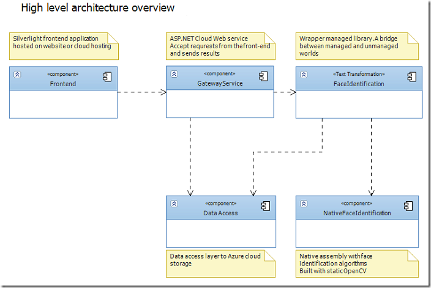
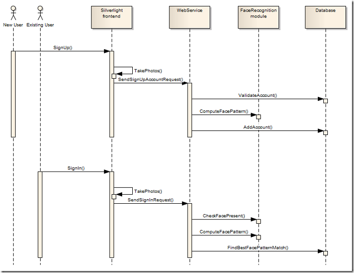

Image processing & cloud computing - Architecture overview
This post will be devoted to high level architecture overview. For newcomers - I’m creating face recognition demo application that will work in the cloud environment and all algorithmic stuff will be written in native C++ code (with help of OpenCV and boost libraries). Under the hood - detailed application architecture overview and diagrams.
**FaceRecognitionCloudApp **- is a demonstration project written in combination of C++ and C# languages. It has two challenging objectives:
- Face detection and robust person identification
- Demonstration of the technology of doing expensive, computer vision related calculations in the scalable server environment (cloud)
Application design follows classic three-tier architecture including presentation level, business logic and data abstraction layer.
Presentation level
The client application is ASP.NET website used to host Silverlight application inside it. Silverlight application implements thin client which duties are: interaction with user, access to web-camera and communication with business layer through WCF RIA Services.
Business logic
This layer contains necessary web-service back-end for presentation layer and face recognition module containing C++ implementation of the face recognition algorithm.
Data abstraction layer
Provides access to database of learned faces. For storing learning data SQL Azure storage is used.
Here is a bit of diagrams for better understanding:

FaceRecognitionCloudApp will offer face-based authentication system. User will be able to register himself through web-interface and login using only web camera (without entering user name/password). Remember - this is only a demonstration of concept. Don’t expect too much from it. You will be able to register account (working web camera required) and then you can login in the system (your face will be the credential).

To be continued…